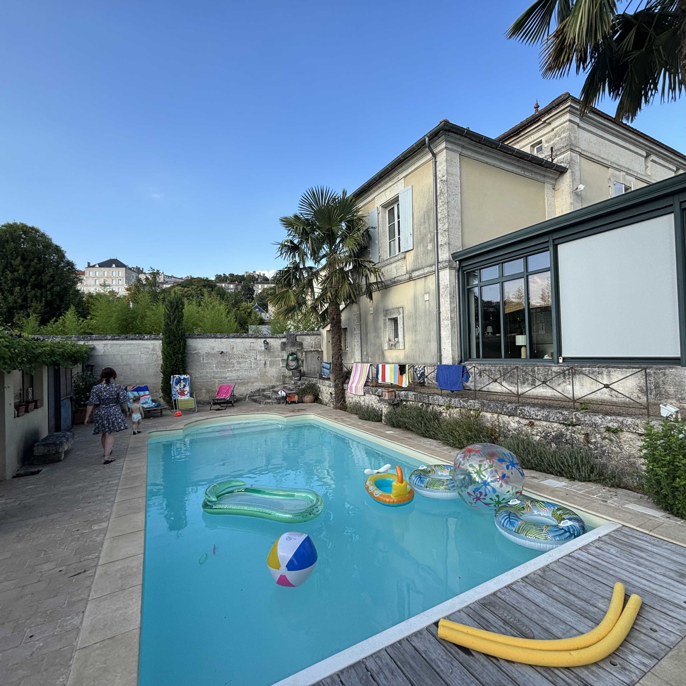
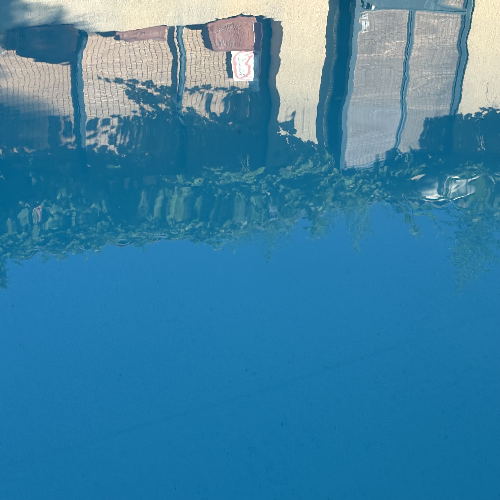
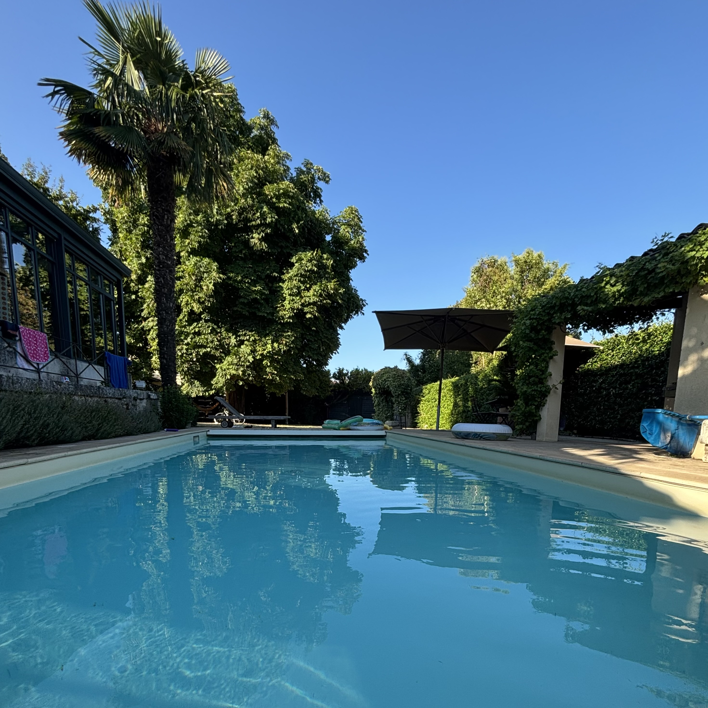
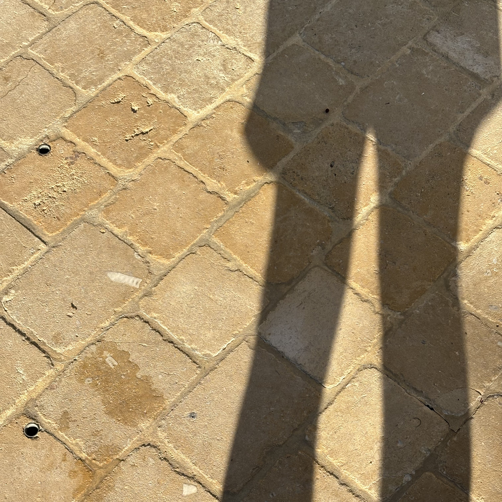
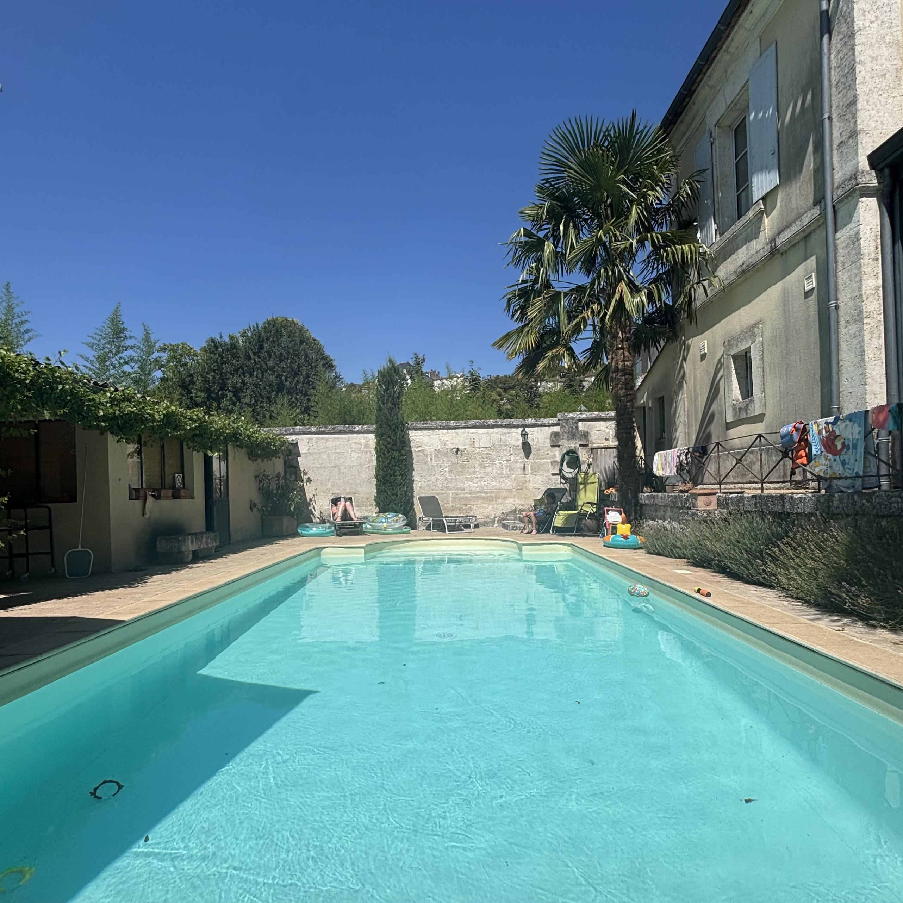
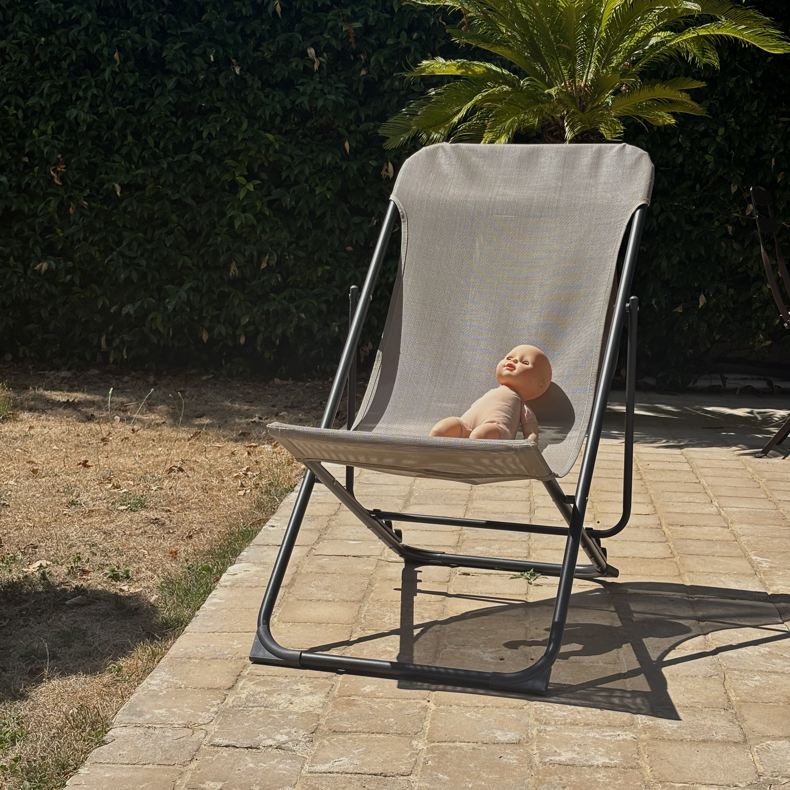

reflecting refracting · alive!
We float above the cool blue surface of our lives across which light is shaped — reflected — refracted. Distant waves travel through us in their infinite arc across the universe

reflecting refracting · alive!

pool surface

the edge of the pool

light in the pool and contrasts with the stone

splashes · sun · music from a site radio

energy gathers in the heat round the pool

whirls and eddies collecting vegetation and debris

the pool warms in the sun — distant fusion taken in by clear water

emersion in the pool · submerging in the still water

night awaits the blue hour

we submerge ourselves in the dark water

nancy and the pool · the pool and the ball

the light playing in the pool · as the pool brings cool at last